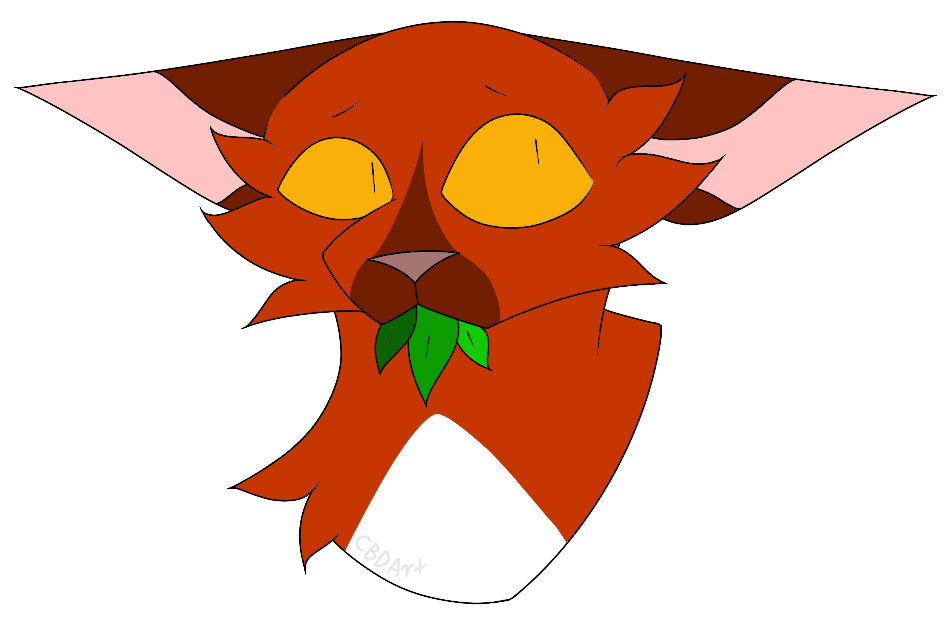

Lost/Unknown Books
Lost Books
There have been many books in the 'Warriors' series, and some of these books have been lost to time.
One such book is one of the many field guides, simply titled 'The Warriors Guide'. This book is one of the most obscure books to be released, and is no longer being printed. This means that this particular book can only be purchased from second-hand sources
click here to view the cover of the field guide
another one of these books is the previously mentioned POB books, which are no longer being printed, and can only be bought second-hand. (see 'Special Editions' for more details)
Rumoured/Unknown books
there have been a few different 'Warriors' books over the years that have been rumoured over the years, though these books have either been confirmed to be fake, or they have simply become that of lost media
One of these unknown books had been a rumoured super-edition, titled 'Alderheart's Mistake' (some people have also referred to this book as 'Alderheart's regret'). This book as been listed on Goodreads, a website that catalogues different books. This rumoured super-edition had been rumoured to focus on the character Alderheart, hence the title. This book along with the Goodreads listing, have since been confirmed fake, as Goodreads listings can be made by anyone.
Another one of these books has the same circumstances, though this book is much more mysterious. This book was listed on Goodreads under the name of 'The Scorched Earth'. It is currently unknown what this book would have been about if it had turned out to be real and there has been no discussion of it by the authors behind the series.
The Goodreads listings for both 'Alderheart's Mistake' and 'The Scorched Earth' have since been taken down
